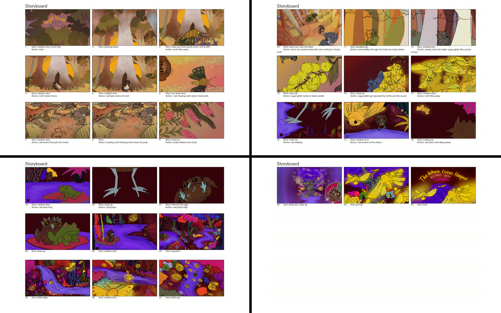
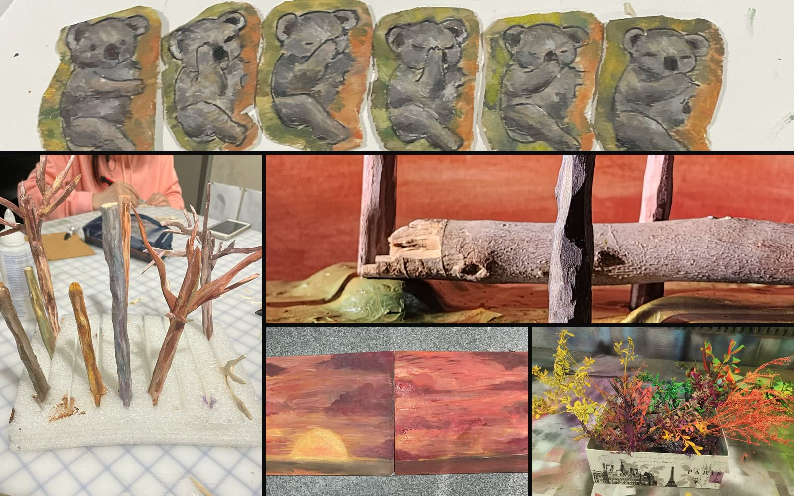
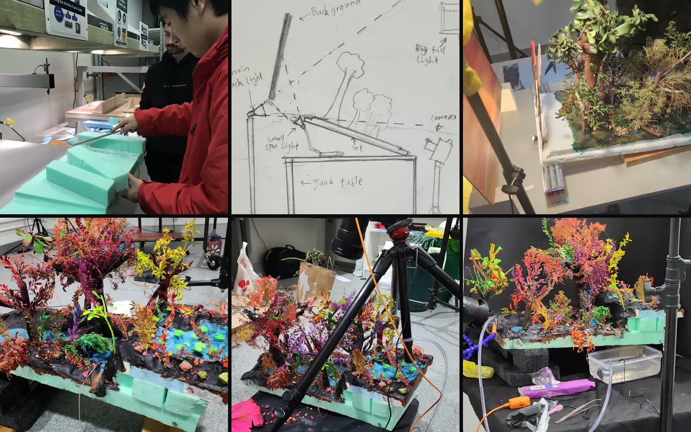
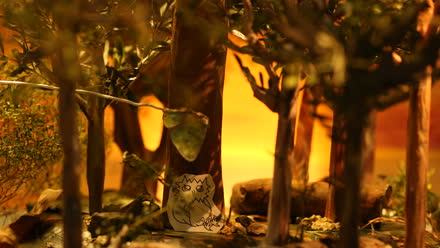
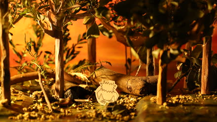
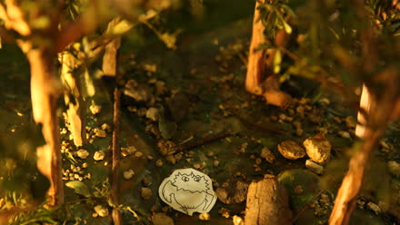
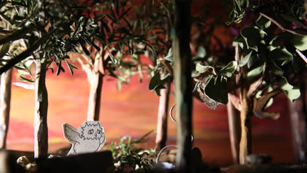
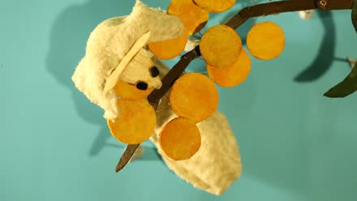
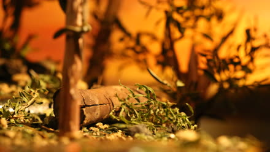

Adapted from the poem Night Vision (while we sleep) by Luke Patterson, the film sets out to faithfully convey the feeling the poem intended, the beauty of the Australian nature and the unseen nocturnal ecosystem that surrounds us as we sleep. Stop-motion captures the organic textures of Australian native fauna and flora, while 2D animation is introduced sparingly to draw the viewer into this mystical world.
Process
The track below showcases a simple overview of our production pipeline.

We didn’t hold back with our colour experimentations in our storyboard, taking ideas from the classic Alice in Wonderland, when going down the rabbit hole into a whole new weird and wonderful world. At this stage we were still hesitant if this project was feasible to do in stop-motion. All the physical designs were not resolved.
For our animatic, we really just wanted to capture the mood and feeling of a wildly mystical yet grounded natural world that draws curiosity. Led by our main character, a baby boobook owl, stumbling through this unexpected journey.
I took my team out on a road trip into an Australian national park, to understand the scales of the trees and nature against our boobook owl. For us to take in the experience when surrounded by that dense foliage, so we could aim to convey the same feeling through our film.

The set design faced multiple challenges, resolving the characters was the more difficult. Making them suitable for stop-motion, believable and alive we had to cut back on the complexity both in terms of the physical and visual design. For the environment, the trees we had the most fun to iterate, by carving balsa wood, painting it, then attaching real shrubs and foliage to it.
This was one of the very first test shots for us to determine the viability of moving forward with stop-motion in this project. The visuals must capture the mood and match or enhance the visuals from our storyboards.

The base of our set was carved using hot wire. The surface was layered with clay for us to mould, colour and add details. For the night time scene, we decorated all the trees and environment with fluorescent paint, which reacts with UV lights during filming. The flowing river was created using a small aquarium water pump.
This clip of timelapse is a BTS look at the scene when we transitioned from day to night.
The night half of the film was shot under UV light to activate the fluorescent paint we used. The scenes were shot as video instead of stop-motion, because the characters became 2D animations we composited on top later.
Frame by frame
The characters were shot on different frame rates. The idea was using the different frame rates to tell the story of our baby boobook owl finding their belonging to the environment as they get lost and wander off into this mystical night. The moth, which guides the owl we see moving smoothly from the very start, representing its belonging and comfort with the space. We see our owl character move more and more smoothly as it traverses through the world ultimately on the same framerate as everything else when it sheds and leads into the night. The following were the unedited raw stop-motion shoots, with outtakes and back plates included.






Rig removal
The moth was the only character requiring rig removal. We had to custom make a very light and flexible rig for our moth. Also by taking a background plate every two frames, it made our post production much easier.
Layer by layer
This was the work flow we used for the night time scenes. The set was filmed on video first. Then, 2D animation drawn straight over that footage. The line pass was then exported and coloured in photoshop for a better control of the translucency and glow. Lastly keyed back in to the composite.
Credits
Effects from SoundIdeas ‘SFXKit by Tommy Tallarico’. Additional sounds from Freesound.org licensed under Creative Commons 4.0 — KangarooVindaloo (‘Desert air with bird night call’, ‘Texture of water’, ‘Fraser Range Salt Lake Eve’, ‘Night Air at Purlkurrji’) and BlackTrillium (‘Aussie sunset in the bush 6–8pm’).
This film was made on the land of the Gadigal People of the Eora Nation. We pay our respects to Elders and Knowledge Holders past and present.